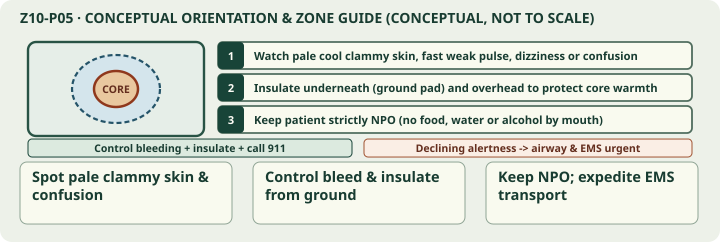

Z10-P05 · Wilderness medicine · New manuscript
Recognize circulatory shock and insulate patients while withholding oral fluids
Spot early signs of circulatory shock and stabilize body heat and position while awaiting clinical rescue.
When it applies · Any patient with major bleeding, trauma, severe burns, allergic reaction, severe vomiting/diarrhea, or unexplained weakness.
Equipment · Insulating ground pad, dry blankets or sleeping bag, wind shelter, and written monitoring log.

Actions
- Watch for shock warning signs—pale cool clammy skin, rapid shallow breathing, rapid weak pulse, restlessness, dizziness, nausea, or worsening confusion—remembering shock can develop even without visible external blood.[M05]
- Call 911 immediately, control any external bleeding, lay the person flat on an insulating ground pad (unless breathing distress or spinal concern dictates otherwise), and wrap them against wind and ground cold.[M05, E05, T02]
- Do NOT give food, water, or alcohol by mouth to a patient in suspected shock—nausea, declining consciousness, or future surgical anesthesia creates severe aspiration risk.[M05]
Failure recognition · Leaving a pale, shivering trauma patient sitting upright on cold bare ground or encouraging them to drink sugary fluids while awaiting EMS.[M05, E05]
Verify · Confirm the patient is insulated underneath and overhead, external bleeding is checked, breathing is monitored, and zero oral fluids are given.[M05, M20, ED]
Stop or change course · Any worsening confusion, fading responsiveness, or abnormal breathing requires immediate re-escalation with 911/dispatch and readiness for airway support.[M05, M03, M22]
Evidence and editorial notes
- E05 · NWS · What To Do If You're Caught in a Winter Storm (current web edition)
- Section: Outside and find shelter · Conditions: Cold, wet or windy winter conditions
Support: Block wind, stay dry and keep off cold ground. Keep exposure reduction separate from making a fire.
Limitations: Improvised windbreaks do not provide rated thermal protection or snow-load capacity. · Conflicting evidence: None; aligns with CDC-H.
Editorial note: Separates wind, ground, and moisture heat-loss pathways. · Specialist reviewer: Cold-weather shelter specialist
Primary source · checked 2026-11-24 - M03 · American Red Cross · CPR Steps and Emergency Response (current web edition)
- Section: Check, Call, Care; Unresponsive Person Without Normal Breathing · Conditions: Unresponsive person not breathing normally; lay responder with EMS activation
Support: Verify scene safety, check responsiveness and normal breathing, call 911 and retrieve an AED if available, and begin dispatcher-guided or trained CPR.
Limitations: Lay text reference cannot substitute for hands-on certified CPR/AED training. · Conflicting evidence: None; aligns with AHA/ARC bystander guidance.
Editorial note: Distinguishes lay activation and dispatcher-guided CPR from advanced life support. · Specialist reviewer: EMS and resuscitation specialist
Primary source · checked 2026-11-24 - M05 · NIH / MedlinePlus · Shock (current web edition)
- Section: Recognizing Circulatory Shock and Positioning · Conditions: Injured or ill patient with pale cool clammy skin, rapid weak pulse, confusion, or dizziness
Support: Treat suspected shock as a life-threatening emergency: call 911, control external bleeding, keep the person warm and insulated from cold ground, and do not give food or drink.
Limitations: Field responders cannot diagnose internal hemorrhage or administer IV fluids. · Conflicting evidence: None; reinforces keeping suspected shock patients NPO and warm.
Editorial note: Core shock recognition and stabilization boundary in Z10. · Specialist reviewer: Emergency and wilderness medicine
Primary source · checked 2026-11-24 - M20 · NIH / MedlinePlus · First Aid Overview (current web edition)
- Section: Lay First-Aid Scope, Kit Readiness, and Documentation · Conditions: Pre-trip kit preparation and remote patient monitoring
Support: Maintain an inspected, unexpired first-aid kit matched to your actual training, keep written patient observations (time, responsiveness, breathing, symptoms, interventions) for EMS handoff, and practice skills in certified courses.
Limitations: Carrying advanced medical instruments without clinical training adds risk rather than capability. · Conflicting evidence: None; aligns with ARC and NPS-K.
Editorial note: Anchors kit sizing, SOAP-style lay observation logs, and scope-of-practice cards. · Specialist reviewer: Wilderness EMS and clinical education
Primary source · checked 2026-11-24 - M22 · American Red Cross · First Aid Steps (current web edition)
- Section: First Aid Steps > Patient Monitoring, Recovery Position, and EMS Handoff · Conditions: Breathing unresponsive patient without suspected spinal injury awaiting EMS
Support: Place an unresponsive but normally breathing patient with no suspected spinal trauma onto their side in a stable recovery position to protect the airway while continuously rechecking breathing until EMS takes over.
Limitations: Do not move a patient with suspected spinal trauma unless immediate scene danger or airway obstruction requires it. · Conflicting evidence: None; aligns with ARC/AHA lay positioning.
Editorial note: Anchors airway-protection positioning and handoff documentation. · Specialist reviewer: EMS and emergency medicine
Primary source · checked 2026-11-24 - T02 · American Red Cross · First Aid Steps (current web edition)
- Section: First Aid Steps > Call 9-1-1 · Conditions: Lay emergency response to unresponsiveness, abnormal breathing or severe bleeding
Support: Activate EMS and get needed equipment. Follow dispatcher directions and act within training.
Limitations: Remote locations may delay EMS arrival, requiring sustained stabilization after activation. · Conflicting evidence: None; aligns with NPS-E.
Editorial note: Mandates early emergency activation and dispatcher adherence. · Specialist reviewer: EMS and wilderness medicine
Primary source · checked 2026-11-24
Source lineage · NIH MedlinePlus and American Red Cross; new manuscript · Classification · New manuscript.